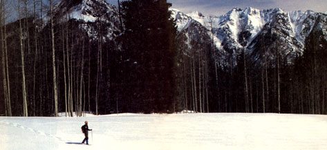

The Snowshoe Book, by William Osgood and Leslie Hurley ($8.95 in paperback from the Stephen Greene Press, P.O. Box 1000, Brattleboro, VT 05301), is just what its subtitle implies: ""A Complete Guide to How, Why, When, and Where."" The ""where,"" however, is heavily oriented toward Canada and the northeastern United States, making this book an especially good bet for eastern snowshoe enthusiasts, but of somewhat less value to westerners.